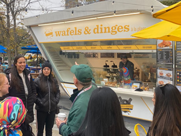
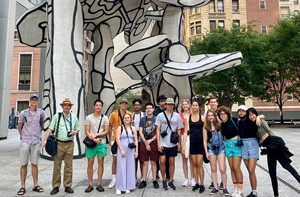
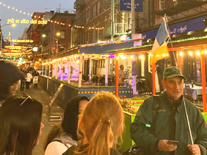
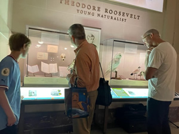

Private and Group Insider Met Museum Tours
Experience the Met Museum like never before with Jared, a former employee!
Insider Met Museum Tour
Custom tours, based on your interests
Success to me is creating an unforgettable experience for you.
Custom Step-On Tours


South Street Seaport
Jared authored the official tour of the South Street Seaport Museum
Destinations
Create a custom tour with Jared, or choose from one of Jared's many popular walking tours of Manhattan, Brooklyn and the boroughs.
Downtown from Colony to Financial Capitol
Gilded Age Walking TourNew Tour
Skyscrapers
Brooklyn Bridge
Brooklyn Heights and DUMBO
The South Street Seaport
(Jared wrote the official tour)
World Trade Center
(Jared wrote the most popular commercial tour)
Chinatown and Little Italy
The Lower East Side
Jewish Lower East Side
Greenwich Village
The East Village
Lower East Side Community Gardens (Commissioned by NYC Parks Dept)
Holiday Lights
42nd St
Times Square
Rockefeller Center and 5th Ave
Central Park (3 Tour Options)
Harlem
Museums famous and not-so-famous
High Line & the Meat Packing District
Other destinations to help you get started:
- The World Trade Center 360 Deep History Tour — through the bottom of Ground Zero, the history, present and future of the WTC - including the heroes, the hubris, the insane that the towers attracted
- The Rent Tour of Alphabet City — squats, community gardens and Life Cafe and the movie and musical sets and scenes (discount vouchers to the theatre available)
- NYC & the Modern Traditional Christmas
- Radical NYC
- Architecture — Federal, Beaux Arts, Gothic, Modern and after
- Great Churches
- Window Shopping and Modern Retail History
- Best NYC Christmas Trees and Spectacles
- Battery Park
- Bryant Park
- Great Pizzas of NYC
- Cathedral of St. John the Divine
- Tour around the Charging Bull
- Asian American civil rights
- Old Chinatown and the Five Points
- Chowhound's NYC (affordable great eats)
- NYC, birthplace of modern rights
- NYC and Modern Art

- Metropolitan Museum of Art Tour (more details)
- NYC and Capitalism
- New York Harbor
- New York Public Library
- Greenwich Village and Gay NYC

- Williamsburg, Brooklyn Touring
- The Gilded Age and the Robber Barrons
- Alexander Hamilton's New York
- Great Bridges
- Slavery and Freedom and African Americans building NYC and beyond
- Columbia University's campuses past, present, and future
- New York University (NYU)
- Washington Square
- NYC on Film
- Bob Dylan's NYC / Bob Dylan on Bleecker
- Stanford White and his Civic Glory
- Immigrants - Transformation, Revolution, and Assimilation
- Lenny Bruce, Barbra Streisand, Woody Allen, the Yippies
- Tammany Hall and Boss Tweed — the most feared and powerful political machine
- From Triangle to Union Square - Al Smith's NYC
- Abraham Lincoln's NYC
- Federal Hall
- The National 911 Memorial Tour
- St. Paul's Chapel
- Tour Trinity Church (in the Financial District)
- Woolworth Building
- United Nations
- Peter Cooper's NYC
- Under-rated Museums
- Museum Mile Touring
- Tour the American Museum of Natural History
 Guggenheim Museum Tour
Guggenheim Museum Tour- Empire State Building
- SkyScraper National Park
- View New York City from Atop a Skyscraper
- Flatiron Building tour
- NYC's Corporations and international corporate alumni
- Columbus Circle and Lincoln Center
- Intensive Lincoln Center Tour

College group public Art Tour- Great Coffees of NYC
- The Dakota Apartment Building
- NYC and Wars of Choice 1848-1862-1898
- Three Little Italies
- FAO Schwartz tour
- St. Patrick's Cathedral
- From Grand Central to Times Square
- Intensive Grand Central Tour
- Theatre Districts then and now
- Manhattan Broadway Tour

Pastrami Tours - 'I'll have what she's having!'- When Harry Met Sally Tour
- Macy's
- Cornelius Vanderbilt's NYC
- Chelsea Market Tour
- Bagels, Brunch, and Bialys
- Manhattan's Geology and Ecology
- What's Next for NYC?
- Gospel Music at a Baptist Church
- John Lennon's NYC and Strawberry Fields
- Robert Moses and Jane Jacobs' NYC
- View the Statue of Liberty tour
- View Manhattan from Brooklyn
- Dylan, Hendrix, Warhol, and Ginsberg and the 60s in the Village
- Jewish NYC
- Andy Warhol, Pop Art, Abstract Expressionists, and 80s Art in NYC
- Walt Whitman's NYC and Brooklyn
- Brownstones, Mansions, and Luxury Apartments
- Literary and Poetic NYC with quotations and readings
- Hipster NYC then and now
- Speakeasies and Old Bars with history
- Emerging Artists and DJs
 Unique neighborhoods and economic districts - only in NYC!
Unique neighborhoods and economic districts - only in NYC!- The SoHo District Tour
- Subway Tours
